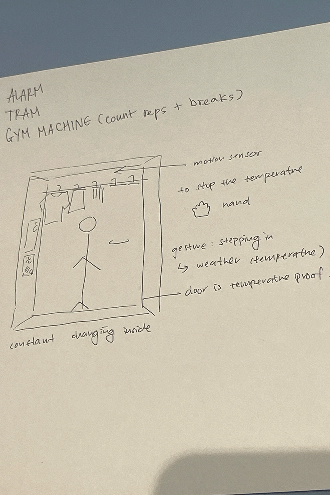

i browsed the internet to find some cool things for inspiration. here's three
https://dhmis.tv/
i like this website because of its unique photorealistic elements
https://abcdinamo.com/
i'm a fan of this specific project from them, it's an instagram filter! the aesthetic and also animation is something i want to attempt eventually
project article linkhttps://seasoned.koto.studio/
i love the concept and execution of this website, eventhough it's kind of unintuitive in some places. very cool concept nonetheless
2. In-class Exercises

exercise 1
we had to think of a new gesture based interaction, and our group made up a narnia-esque wardrobe that allow the user to feel an accurate replication of the outside climate indoor
exercise 2
we sketched a website, then attempted to find all the tags required to build it